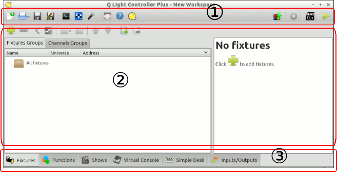

<html dir="ltr">
<head>
<title>Q Light Controller Plus Documentation - チュートリアル</title>
<script src="utility.js" type="text/javascript"></script>
<link href="style.css" rel="stylesheet" type="text/css"></link>
  <meta charset="utf-8">
</head>
<BODY onLoad="replaceqrc()">

<h1>メイン画面構成</h1>

<p>QLC+は３つの要素で画面が構成されています。
<ol>
<li>上部のメニューバー</li>
<li>現在のタブに応じた中央の編集画面</li>
<li>タブを切り替えるための画面下部のタブバー</li>
</ol>
</p>
<p>
  
</p>
<p>
　QLC+のほとんどのボタンにはツールチップ(簡易説明)があります、ボタンの上にカーソルを置き、しばらく待つと説明が表示されます。

<h2>メニューバー (1)</h2>

<p>画面上部に左詰めでボタンが配置されています。</p>
<hr>
<p>

   新規プロジェクト作成 (CTRL+N)<br>
   プロジェクトデータの読み込み (ボタンを長押しすると、最近のファイルを表示します) (CTRL+O)<br>
    プロジェクトデータの上書き保存 (CTRL+S)<br>
  プロジェクトデータの別名保存<br>
</p>
<hr>
<p>
<A HREF="fixturemonitor.html">DMX モニター</a> (CTRL+M)<br>
<A HREF="addresstool.html">ディップスイッチ設定用ツール</a><br>
<A HREF="audiotriggers.html">オーディオトリガー</a><br>
</p>
<hr>
</p>
<p>
  フルスクリーンモード (CTRL+F11)<BR>
   ヘルプ (Shift+F1)<BR>
   QLC+のシステム情報の表示<BR>
</p>
<hr>
<P>
<A HREF="dmxdump.html">現在出力されているDMXファンクションに登録</a> (CTRL+D)<br>
Live Edit (本番モード中にファンクションの編集ができます)<br>
  Live Edit (本番モード中にバーチャルコンソールの編集ができます)トグルをクリックします<br>
 再生中の全てのファンクションの停止 (CTRL+Shift+ESC)<br>
 Black out(暗転)<br>
 本番モードと仕込みモードを切り替えます。 (CTRL+F12)
</P>

<h2>中央の編集画面 (2)</h2>

タブによって表示される内容が変わります。

<h2>タブバー (3)</h2>
<p>
　タブを切り替えることができます。</p>
<P>
  <A HREF="fixturemanager.html">フィクスチャーマネージャー</A><BR>
  <A HREF="functionmanager.html">ファンクションマネージャー</A><BR>
  <A HREF="showmanager.html">タイムライン</A><BR>
  <A HREF="virtualconsole.html">バーチャルコンソール</A><BR>
  <A HREF="simpledesk.html">シンプル卓</A><BR>
  <A HREF="howto-input-output-mapping.html">Input/Output</A>設定画面<BR>
</P>

</BODY>
</html>
